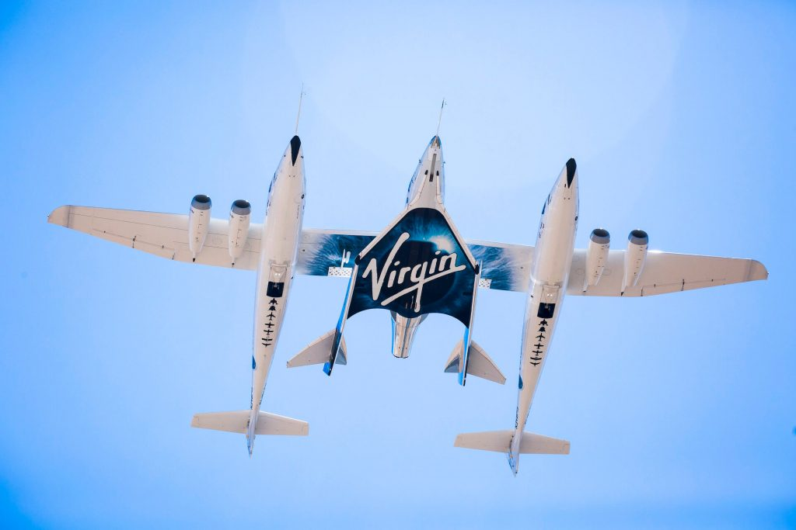
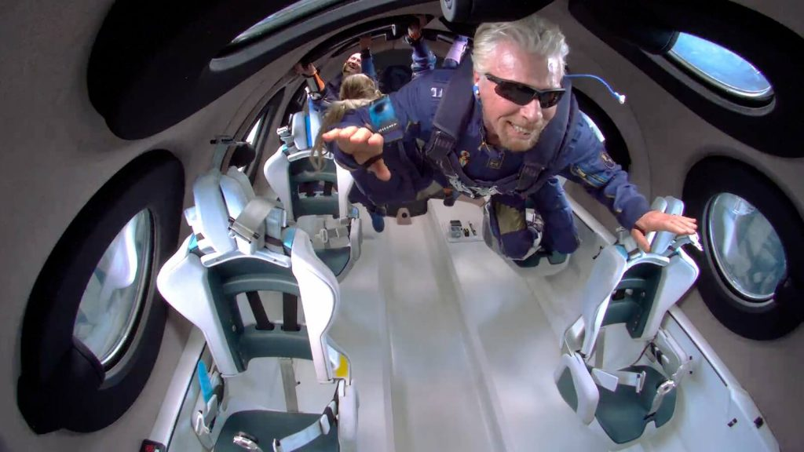
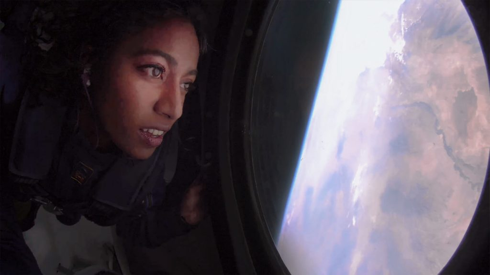
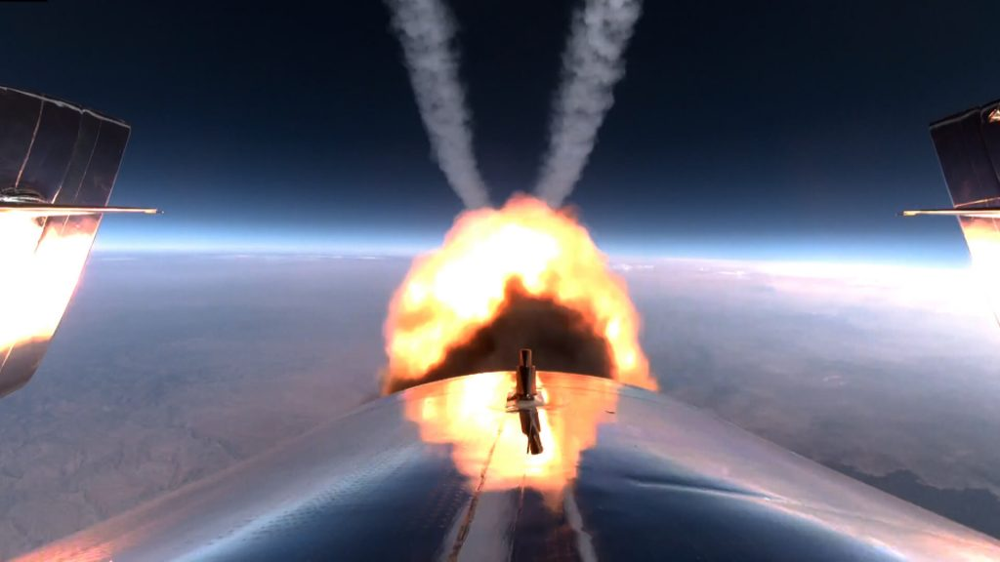
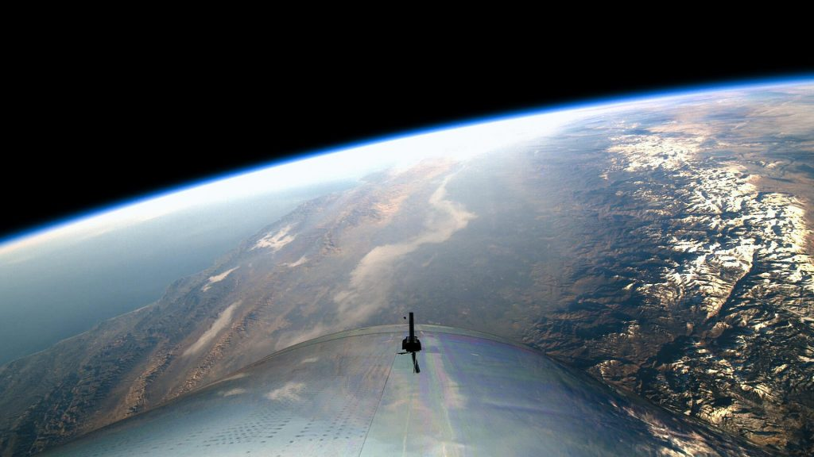
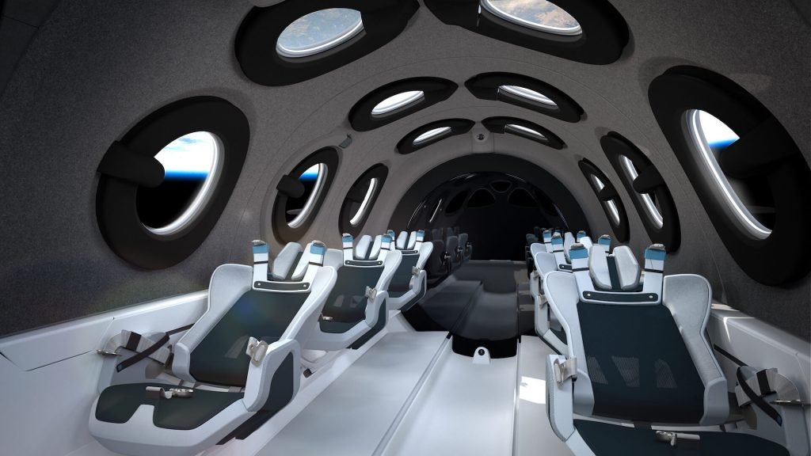

ရစ်ချတ်ဘရန်ဆန် (Richard Branson) Virgin Group က ပိုင်ဆိုင်တဲ့ ဒီ Virgin Galactic အာကာသ ခရီးသွားလာရေး ကုမ္ပဏီဟာ ၂၀၁၈ နောက်ပိုင်း အာကာသ ခရီးသွားတွေအတွက် လက်မှတ်ရောင်းချတာကို ခန ရပ်နား ထားခဲ့ရာက အခုမှ ပြန်ရောင်းမယ်လို့ ကြေငြာလိုက်ခြင်း ဖြစ်ပါတယ်။ ဒါပေမယ့် လက်မှတ်ဈေးကတော့ တက်သွားပါပြီတဲ့။ အရင်တုန်းက လက်မှတ်တစ်စောင်ကို အမေရိကန် ဒေါ်လာ ၂၅၀,၀၀၀ နဲ့ ရောင်းချနေရာက အခုတော့ တစ်စောင်ကို ဒေါ်လာ ၄၅၀,၀၀၀ နဲ့ ရောင်းချမှာ ဖြစ်ပါတယ်။
ဒီလို လက်မှတ်ရောင်းဖို့ ကြေငြာတာဟာ ပြီးခဲ့တဲ့ ဇူလိုင်လ ၁၁ ရက်နေ့က Virgin Galactic ရဲ့ Unity 22 အာကာသယာဉ် ခရီးစဉ် အောင်မြင်စွာ ပျံသန်းနိုင်ပြီးနောက် ပြန်လည် စတင်လာခြင်း ဖြစ်ပါတယ်။ အဲ့သည် Unity 22 ခရီးစဉ်ဟာ Virgin Galactic ရဲ့ ပထမဆုံး ခရီးသည် အပြည့်နဲ့ စမ်းသပ်ပျံသန်းမှုလဲ ဖြစ်ပါတယ်။ ဒီခရီးစဉ်မှာ ဘရန်ဆန် နဲ့အတူ အခြား ခရီးသည် ၃ ဦး အတူလိုက်ပါခဲ့ပြီး အာကာသ ယာဉ်မှူး နှစ်ဦးက ယာဉ်ကို မောင်းနှင် ပျံသန်းခဲ့ခြင်း ဖြစ်ပါတယ်။
“ကျွန်တော်တို့ဟာ အာကာသ ခရီးသွားခြင်းရဲ့ အံ့ဩဖွယ်ရာ ဆန်းကြယ်မှုတွေကို ကမ္ဘာ့လူသားတွေဆီ အရောင်ဆောင်ကျဉ်းနိုင်ဖို့ ကြိုးစားနေတာပါ။ ဒီလိုအချိန်မှာ ဒီလို အာကာသ ခရီးသွားခွင့် အခွင့်အရေးကို သာမန် ခရီးသည်တွေအတွက် လမ်းဖွင့်ပေးခြင်း ဖြစ်ပါတယ်” လို့ Virgin Galactic ရဲ့ အမှုဆောင် အရာရှိချုပ် (Chief Executive Officer, CEO) မိုက်ကယ် ကိုဂလေဇီယာ (Michael Colglazier) က ပြောကြားပါတယ်။
Virgin Galactic က လက်မှတ်တွေကို နည်း ၃ မျိုးနဲ့ ရောင်းချပေး သွားမှာ ဖြစ်ပါတယ်။ ပထမ နည်းလမ်းကတော့ လက်မှတ် တစ်စောင်ချင်း ဝယ်ယူသူတွေ အတွက် ရောင်းချပေးမှာ ဖြစ်ပါတယ်။ ဒုတိယ နည်းလမ်းကတော့ လက်မှတ် အများအပြား ဝယ်ယူသူတွေကို ရောင်ချပေးမှာ ဖြစ်ပြီး နောက်ဆုံး နည်းလမ်း အနေနဲ့ လေယာဉ် ခရီးစဉ် တစ်ခုလုံးကိုလဲ ဝယ်ယူနိုင်မှာ ဖြစ်ပါတယ်။ အာကာသယာဉ် ခရီးစဉ် တစ်ခေါက်မှာ စုစုပေါင်း ခရီးသည် ၈ ဦးအထိ လိုက်ပါပျံသန်းနိုင်မှာ ဖြစ်ပါတယ်။
ဒီလို အပျော်စီး အာကာသ ခရီးစဉ်တွေအတွက် လက်မှတ်တွေ ရောင်းချပေးသလို အာကာသ ယာဉ်မှူးတွေ လေ့ကျင့်ရေး အတွက်လဲ အထူး ခရီးစဉ် လက်မှတ်တွေ ရောင်းချပေးမယ်လို့ ပြောပါတယ်။ ဒီ လေ့ကျင့်ရေး ခရီးစဉ် လက်မှတ်တွေကတော့ တစ်စောင်ကို အမေရိကန် ဒေါ်လာ ၆ သိန်း ကုန်ကျမယ်လို့ သိရပါတယ်။






ဒီ အာကာသယာဉ်ဟာ အာကာသထဲကို လွတ်လွတ်ကင်းကင်း ရောက်သွားတာတော့ မဟုတ်ပါဘူး။ Suborbital Space လို့ခေါ်တဲ့ နယ်စပ်မျဉ်းကိုပဲ ရောက်တာပါ။ ဒီ suborbital space မှာ ၃-၄ မိနစ်လောက် ကြာအောင် နေနိုင်ပြီး ဒီအချိန်တိုလေး အတွင်းမှာ ဆွဲငင်အားမဲ့ အခြေအနေကို ခံစားကြ ရမှာ ဖြစ်ပါတယ်။ အာကာသကနေ မြင်ရမယ့် ကမ္ဘာ့မြင်ကွင်း ကိုလဲ ခနတဖြုတ် ခံစားကြရမှာ ဖြစ်ပါတယ်။ ပြီးရင်တော့ ကမ္ဘာမြေပြင်ပေါ်ကို သာမန်လေယာဉ် ဆင်းသလိုမျိုး ပြန်လည် ဆင်သက်လာမှာ ဖြစ်ပါတယ်။ ဒီခရီးစဉ် တစ်ခုလုံးအတွက် စုစုပေါင်း ကြာမြင့်ချိန်ကတော့ ၁ နာရီလောက် ကြာမှာ ဖြစ်ပါတယ်။
အခုထိတော့ စုစုပေါင်း လူ ၆၀၀ လောက်က ဒီအာကာသ အပျော်ခရီးစဉ်တွေ အတွက် ကြိုတင်လက်မှတ် ဝယ်ယူ ထားပြီးဖြစ်ပါတယ်။ ဒါပေမယ့် ကုမ္ပဏီကတော့ ခရီးသည်တွေ ပိုများလာမယ်လို့ ယုံကြည်နေပါတယ်။
VSS Unity ရဲ့ နောက်ခရီးစဉ်ကို လာမယ့် စက်တင်ဘာလထဲမှာ ပျံသန်းမှာ ဖြစ်ပါတယ်။ ဒီခရီးစဉ်ကို ဝယ်ယူထားသူတွေကတော့ အီတလီ လေတပ်က လေတပ်ဖွဲ့ဝင်တွေပဲ ဖြစ်ပါတယ်။
အာကာသယာဉ်ကို အမြင့်ကို သယ်ဆောင်ပေးတဲ့ သယ်ယူပို့ဆောင်ရေး လေယာဉ်ဖြစ်တဲ့ VMS Eve ကိုလဲ အဆင့်မြှင့်တင် မှုတွေ ပြုလုပ်သွားမှာ ဖြစ်ပါတယ်။ ဒီအဆင့် မြှင့်တင်မှုတွေ ပြုလုပ်တဲ့အတွက် ဒီလေယာဉ်ကို ပျံသန်းမှု အကြိမ် ၁၀၀ ခန့် ဆက်တိုက် ပြုလုပ်သွားနိုင်မှာ ဖြစ်ပါတယ်။ ယခုအချိန်မှာတော့ Eve ဟာ ဆက်တိုက် ၁၀ ကြိမ်ပဲ ပျံသန်းနိုင်ပြီး ၁၀ ကြိမ်ပျံသန်းပြီးတိုင်း အကြီးစား စစ်ဆေးမှုနဲ့ ကြံ့ခိုင်ရေး ထိန်းသိမ်းမှုတွေ ပြန်လည် လုပ်ဆောင်ရပါတယ်။ အဆင့်မြှင့်တင်ပြီးရင်တော့ အကြိမ် ၁၀၀ ပျံသန်းပြီးမှပဲ အကြီးစား စစ်ဆေးမှုနဲ့ ပြုပြင်ထိန်းသိမ်းမှုတွေ လုပ်ဆောင်ဖို့ လိုတော့မှာ ဖြစ်ပါတယ်။
Virgin Galactic အနေနဲ့ ပုံမှန် အပျော်တမ်း အာကာသ ခရီးစဉ်တွေကို နောက်နှစ် ၂၀၂၂ နှစ်ကုန်ပိုင်းလောက်ကနေ စတင်ပြီး ပုံမှန် ပျံသန်းသွားနိုင်မယ်လို့ ကုမ္ပဏီက ကြေငြာပါတယ်။
Virgin Galactic is selling tickets to space again, now for $450,000 per seat